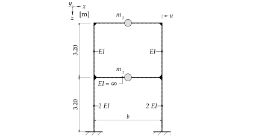
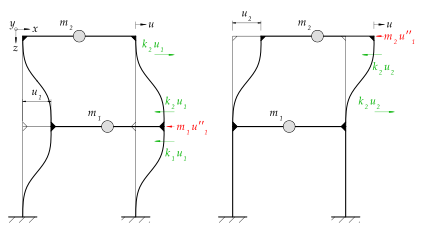
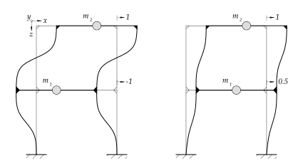

%run style_and_packages.ipynb11 Beispiel: Eigenvektoren mit direkt bestimmter Steifigkeitsmatrix{#sec-mms_steif}
11.1 Aufgabenstellung
Das System in Abbildung 11.1 zeigt ein Rahmentragwerk, welches als Zweimassenschwinger modelliert werden kann.

Gesucht:
Eigenkreisfrequenz \(\omega\)
Eigenformen - Normierung auf \[\phi_1^T = \begin{bmatrix} & 1\\ \end{bmatrix} \] \[\phi_2^T = \begin{bmatrix} & 1\\ \end{bmatrix}\]
Skizze der Eigenformen
Gegeben:
- Dehnsteifigkeit aller Stäbe \(E\cdot A = \infty\)
omega, t, E,I, H = sp.symbols('omega, t, E, I, H')
m_1, m_2 = sp.symbols('m_1, m_2')
k_1, k_2 = sp.symbols('k_1, k_2')
omega_n = sp.symbols('omega_n')params = {E: 30*10**3 *unit.N/unit.mm**2,
I:2*10**9*unit.mm**4,
m_1:2*20000*unit.N*unit.second**2/unit.m,
m_2:20000*unit.N*unit.second**2/unit.m,
H:3.2*unit.m,
}
render.dict_to_table(params)| \(E = \frac{30000 \text{N}}{\text{mm}^{2}}\) | \(H = 3.2 \text{m}\) |
| \(I = 2000000000 \text{mm}^{4}\) | \(m_{1} = \frac{40000 \text{N} \text{s}^{2}}{\text{m}}\) |
| \(m_{2} = \frac{20000 \text{N} \text{s}^{2}}{\text{m}}\) |
11.2 Musterlösung
11.2.1 Eigenkreisfrequenzen
11.2.1.1 Steifigkeitsmatrix \(\mathbf{K}\)
Zur Bestimmung der Steifigkeitsmatrix ist das System an jedem Freiheitsgrad auszulenken, wie in Abbildung 11.2 dargestellt ist.

Wichtig dabei sind die Richtungen der Kräfte. Als Denkstütze gilt folgendes:
- Der Auslenkung um \(u\) wirkt die Federkraft entgegen, welche \(k u\) entspricht.
- Zusätzlich wirkt die Trägheitskraft der Auslenkung entgegen, welche \(m u''\) entspricht.
- Nach der Betrachtung des ausgelenkten Punkts, kann mittels Actio-Reactio-Prinzip das “Stockwerk” ins Gleichgewicht gebracht werden.
- Vorzeichen sind gegen der Bewegungsrichtig positiv.
11.2.1.2 Horizontale Steifigkeit
Für entsprechende Anwendungsfälle gibt es fertige Lösungen zur Bestimmung der Steifigkeit. Gemäss Abbildung 11.1 ist die Stütze am Fuss- und Kopfpunkt eingespannt. Somit resultiert die Steifigkeit zu:
\[ k_{Stuetze} = \frac{12EI_{Stuetze}}{H^3} \tag{11.1}\]
Diese gilt für eine einzelne Stütze. Eingesetzt in die Steifigkeitsmatrix:
params['k_1'] = 2*(12 * 2*E*I / H**3).subs(params).simplify().evalf(6)
params['k_2'] = 2*(12 * E*I / H**3).subs(params).simplify().evalf(6)
K = sp.Matrix([[k_1 + k_2, -k_2],[-k_2, k_2]])
render.eq_display('k_1', 2*(12 * 2*E*I / H**3),
'k_2', 2*(12 * E*I / H**3),
sp.MatrixSymbol('K', 2,2), K,
sp.MatrixSymbol('K', 2,2), K.subs(params),
)\[\begin{equation}k_{1} = \frac{48 E I}{H^{3}}\end{equation}\]
\[\begin{equation}k_{2} = \frac{24 E I}{H^{3}}\end{equation}\]
\[\begin{equation}\mathbf{K} = \left[\begin{matrix}k_{1} + k_{2} & - k_{2}\\- k_{2} & k_{2}\end{matrix}\right]\end{equation}\]
\[\begin{equation}\mathbf{K} = \left[\begin{matrix}\frac{1.31836 \cdot 10^{8} \text{N}}{\text{m}} & - \frac{4.39453 \cdot 10^{7} \text{N}}{\text{m}}\\- \frac{4.39453 \cdot 10^{7} \text{N}}{\text{m}} & \frac{4.39453 \cdot 10^{7} \text{N}}{\text{m}}\end{matrix}\right]\end{equation}\]
11.2.2 Eigenvektoren
11.2.2.1 Massenmatrix \(\mathbf{M}\)
Die Massenmatrix folgt dem gleichen Aufbau wie die Steifigkeitsmatrix. Es gelten die gleichen Vorzeichenregelungen.
M = sp.Matrix([[m_1, 0],[0, m_2]])
render.eq_display(sp.MatrixSymbol('M', 2,2), M,
sp.MatrixSymbol('M', 2,2), M.subs(params))\[\begin{equation}\mathbf{M} = \left[\begin{matrix}m_{1} & 0\\0 & m_{2}\end{matrix}\right]\end{equation}\]
\[\begin{equation}\mathbf{M} = \left[\begin{matrix}\frac{40000 \text{N} \text{s}^{2}}{\text{m}} & 0\\0 & \frac{20000 \text{N} \text{s}^{2}}{\text{m}}\end{matrix}\right]\end{equation}\]
11.2.2.2 Eigenkreisfrequenzen
Bei einem Mehrmassenschwinger gibt es entsprechend den Freiheitsgraden Eigenkreisfrequenzen \(\omega_n\). Diese lassen sich anhand folgender Gleichung bestimmen:
\[\det{[\mathbf{K}-\omega_n^2 \mathbf{M}]=0}\]
eq_omega = sp.det(K-omega_n**2*M)
omega_n_solve = sp.solve(eq_omega, omega_n)
omega_1 = omega_n_solve[1]
omega_2 = omega_n_solve[3]
render.eq_display('omega_1', omega_1.subs(params).simplify().evalf(3),
'omega_2', omega_2.subs(params).simplify().evalf(3))\[\begin{equation}\omega_{1} = \frac{33.1}{\text{s}}\end{equation}\]
\[\begin{equation}\omega_{2} = \frac{66.3}{\text{s}}\end{equation}\]
11.2.2.3 Eigenvektoren \(\phi\)
phi_11, phi_21, phi_12, phi_22 = sp.symbols('phi_11, phi_21, phi_12, phi_22')
params['phi_21'] = 1
phi_1 = sp.Matrix([[phi_11], [phi_21]])
phi_11 = list(sp.solve((K-omega_1**2 *M)*phi_1, phi_11).values())[0]
params['phi_11'] = phi_11.subs(params).simplify()
render.eq_display(sp.simplify((K-omega_1**2 *M)*phi_1),sp.Matrix([[0],[0]]),
sp.MatrixSymbol('phi_1', 2,1),sp.simplify(phi_1.subs(params)).evalf(3))\[\begin{equation}\left[\begin{matrix}\frac{- k_{2} m_{2} \phi_{21} + \frac{\phi_{11} \left(- k_{2} m_{1} + m_{2} \left(k_{1} + k_{2}\right) + \sqrt{k_{1}^{2} m_{2}^{2} - 2 k_{1} k_{2} m_{1} m_{2} + 2 k_{1} k_{2} m_{2}^{2} + k_{2}^{2} m_{1}^{2} + 2 k_{2}^{2} m_{1} m_{2} + k_{2}^{2} m_{2}^{2}}\right)}{2}}{m_{2}}\\\frac{- k_{2} m_{1} \phi_{11} + \frac{\phi_{21} \left(k_{2} m_{1} - m_{2} \left(k_{1} + k_{2}\right) + \sqrt{k_{1}^{2} m_{2}^{2} - 2 k_{1} k_{2} m_{1} m_{2} + 2 k_{1} k_{2} m_{2}^{2} + k_{2}^{2} m_{1}^{2} + 2 k_{2}^{2} m_{1} m_{2} + k_{2}^{2} m_{2}^{2}}\right)}{2}}{m_{1}}\end{matrix}\right] = \left[\begin{matrix}0\\0\end{matrix}\right]\end{equation}\]
\[\begin{equation}\mathbf{\phi}_{1} = \left[\begin{matrix}0.5\\1.0\end{matrix}\right]\end{equation}\]
params['phi_22'] = 1
phi_2 = sp.Matrix([[phi_12], [phi_22]])
phi_12 = list(sp.solve((K-omega_2**2 *M)*phi_2, phi_12).values())[0]
params['phi_12'] = phi_12.subs(params).simplify()
render.eq_display(sp.simplify((K-omega_2**2 *M)*phi_2),sp.Matrix([[0],[0]]),
sp.MatrixSymbol('phi_2', 2,1),sp.simplify(phi_2.subs(params)).evalf(3))\[\begin{equation}\left[\begin{matrix}\frac{- k_{2} m_{2} \phi_{22} + \frac{\phi_{12} \left(- k_{2} m_{1} + m_{2} \left(k_{1} + k_{2}\right) - \sqrt{k_{1}^{2} m_{2}^{2} - 2 k_{1} k_{2} m_{1} m_{2} + 2 k_{1} k_{2} m_{2}^{2} + k_{2}^{2} m_{1}^{2} + 2 k_{2}^{2} m_{1} m_{2} + k_{2}^{2} m_{2}^{2}}\right)}{2}}{m_{2}}\\\frac{- k_{2} m_{1} \phi_{12} + \frac{\phi_{22} \left(k_{2} m_{1} - m_{2} \left(k_{1} + k_{2}\right) - \sqrt{k_{1}^{2} m_{2}^{2} - 2 k_{1} k_{2} m_{1} m_{2} + 2 k_{1} k_{2} m_{2}^{2} + k_{2}^{2} m_{1}^{2} + 2 k_{2}^{2} m_{1} m_{2} + k_{2}^{2} m_{2}^{2}}\right)}{2}}{m_{1}}\end{matrix}\right] = \left[\begin{matrix}0\\0\end{matrix}\right]\end{equation}\]
\[\begin{equation}\mathbf{\phi}_{2} = \left[\begin{matrix}-1.0\\1.0\end{matrix}\right]\end{equation}\]
11.2.2.4 Orthogonalitätsbedingung
Zur Entkoppelung des Systems wird die Orthogonalität der Eigenvektoren kontrolliert. Siehe Kapitel 12.2.2.4 für eine ausführliche Erklärung.
render.eq_display(sp.MatrixSymbol('phi_1',2,1).T*sp.MatrixSymbol('M', 2,2)*sp.MatrixSymbol('phi_1',2,1),(phi_1.T*M*phi_1).subs(params).evalf(3),
sp.MatrixSymbol('phi_2',2,1).T*sp.MatrixSymbol('M', 2,2)*sp.MatrixSymbol('phi_2',2,1),(phi_2.T*M*phi_2).subs(params).evalf(3),
sp.MatrixSymbol('phi_2',2,1).T*sp.MatrixSymbol('M', 2,2)*sp.MatrixSymbol('phi_1',2,1),(phi_2.T*M*phi_1).subs(params).evalf(3),
sp.MatrixSymbol('phi_1',2,1).T*sp.MatrixSymbol('M', 2,2)*sp.MatrixSymbol('phi_2',2,1),(phi_1.T*M*phi_2).subs(params).evalf(3))\[\begin{equation}\mathbf{\phi}_{1}^{T} \mathbf{M} \mathbf{\phi}_{1} = \left[\begin{matrix}\frac{3.0 \cdot 10^{4} \text{N} \text{s}^{2}}{\text{m}}\end{matrix}\right]\end{equation}\]
\[\begin{equation}\mathbf{\phi}_{2}^{T} \mathbf{M} \mathbf{\phi}_{2} = \left[\begin{matrix}\frac{6.0 \cdot 10^{4} \text{N} \text{s}^{2}}{\text{m}}\end{matrix}\right]\end{equation}\]
\[\begin{equation}\mathbf{\phi}_{2}^{T} \mathbf{M} \mathbf{\phi}_{1} = \left[\begin{matrix}0\end{matrix}\right]\end{equation}\]
\[\begin{equation}\mathbf{\phi}_{1}^{T} \mathbf{M} \mathbf{\phi}_{2} = \left[\begin{matrix}0\end{matrix}\right]\end{equation}\]
Für die Steifigkeitsmatrix:
render.eq_display(sp.MatrixSymbol('phi_1',2,1).T*sp.MatrixSymbol('K', 2,2)*sp.MatrixSymbol('phi_1',2,1),sp.simplify((phi_1.T*K*phi_1).subs(params)).evalf(3),
sp.MatrixSymbol('phi_2',2,1).T*sp.MatrixSymbol('K', 2,2)*sp.MatrixSymbol('phi_2',2,1),sp.simplify((phi_2.T*K*phi_2).subs(params)).evalf(3),
sp.MatrixSymbol('phi_2',2,1).T*sp.MatrixSymbol('K', 2,2)*sp.MatrixSymbol('phi_1',2,1),sp.simplify((phi_2.T*K*phi_1).subs(params)).evalf(4),
sp.MatrixSymbol('phi_1',2,1).T*sp.MatrixSymbol('K', 2,2)*sp.MatrixSymbol('phi_2',2,1),sp.simplify((phi_1.T*K*phi_2).subs(params)).evalf(4))\[\begin{equation}\mathbf{\phi}_{1}^{T} \mathbf{K} \mathbf{\phi}_{1} = \left[\begin{matrix}\frac{3.3 \cdot 10^{7} \text{N}}{\text{m}}\end{matrix}\right]\end{equation}\]
\[\begin{equation}\mathbf{\phi}_{2}^{T} \mathbf{K} \mathbf{\phi}_{2} = \left[\begin{matrix}\frac{2.64 \cdot 10^{8} \text{N}}{\text{m}}\end{matrix}\right]\end{equation}\]
\[\begin{equation}\mathbf{\phi}_{2}^{T} \mathbf{K} \mathbf{\phi}_{1} = \left[\begin{matrix}0\end{matrix}\right]\end{equation}\]
\[\begin{equation}\mathbf{\phi}_{1}^{T} \mathbf{K} \mathbf{\phi}_{2} = \left[\begin{matrix}0\end{matrix}\right]\end{equation}\]
11.2.3 Eigenformen
